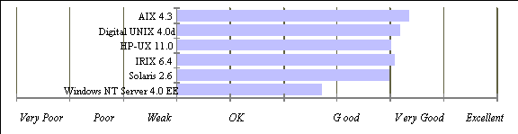
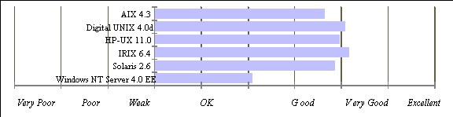
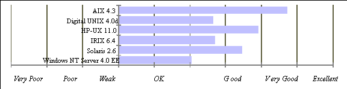

| Noticias Archivos Compañías Consejos |
Microsoft Windows NT Server 4.0 versus UNIXpor John Kirch |
Introducción
Características en redes Internet/Intranet
Algunas Falsas Ideas
Opiniones de otros profesionales
de sistemas de información
(MIS)
Servidores Web
Servidores de Correo
Conclusión
Linux y NT Server 4.0 a grandes rasgos
¿Qué están haciendo las Grandes Compañías?
Enlaces de Interés
¿Porqué escribió este artículo? y
¿Cuál es mi interés personal?
IntroducciónEl propósito de este artículo es el de proveer a los responsables de empresas la información necesaria para tomar decisiones correctas (inteligentes) en la compra del hardware y software de servidores. Esta información está basada en la experiencia de experimentados profesionales certificados MIS. La intención es la de comparar y contrastar las implicaciones de escoger un sistema operativo u otro en términos no técnicos, o al menos con la mínima jerga técnica posible. Debida a la urgente necesidad de información como la presentada aquí, esta página es lanzada prematuramente y debe ser considerada como un trabajo en progreso. Cualquier persona que desee contribuir a este proyecto es bienvenida y puede dirigirse a e-mail. Por favor, limite sus mensajes a comentarios o críticas constructivas . Sistemas OperativosCostes y aspectos de las licenciasMuchos directivos estarán de acuerdo que el mero coste de un sistema operativo es trivial en comparación con los costes globales. Aunque Windows NT Server 4.0 puede ser más caro que algunos UNIX comerciales (NT Server para cinco usuarios - $809; 10-usuarios $1129); Windows NT Server, edición Enterprise 4.0 para 25 usuarios - $3,999; Edición Enterprise 4.0 para 50 usuarios - $4,799; NT Server 4.0 Kit de documentación $69.95; Fuente: Microsoft), esto puede ser tomado como cantidades triviales en ferias de productos. Si una solución comercial económica está siendo buscada, BSD (Berkley Software Design) ofrece un sistema operativo UNIX con más funcionalidades que Windows NT por sólo $995. Si queremos equiparar la funcionalidad ofrecida por BSD, tenemos que añadir al paquete NT varios productos de Microsoft y de terceros fabricantes, lo que deja el precio final de la solución NT al rededor de los $4,000, de acuerdo con BSDI. Maggie Biggs, una analista senior en InfoWorld especializada en tecnologías de bases de datos y diseño de aplicaciones, desarrollo y desarrollo vía intranets y otras redes, estima un precio de $4,636 para una solución Windows NT 4.0 comparable en su artículo en el cual compara NT 4.0 al Linux comercial Red Hat (por sólo $49.95). Aquí uno puede apreciar que un buen marketing puede a menudo distraer a los clientes de considerar sus verdaderas necesidades. Para el cliente más consciente de los costes, Linux o FreeBSD deberían ser las elecciones obvias. No cuestan nada, y además son estables y ofrecen tantas funcionalidades, si no todas, como los sistemas UNIX comerciales. Un lector me informó que mencionar Linux podría repercutir en la credibilidad de este artículo. Siento discrepar. La existencia de una alianza como la mencionada en el artículo Andreessen Sees Mozilla-Linux Upset of Windows muestra claramente que Linux está reforzando su presencia en entornos comerciales. (Para iniciados en este terreno, Mozilla es el nombre del programa Netscape/Communicator y Marc Andreessen es el CEO de Netscape.). Históricamente, grandes corporaciones han ignorado el software libre debido a la asumpción infundada que cualquier cosa libre no puede ser productiva. La tendencia reciente en algunas compañías es utilizar estos sistemas operativos bajos en costes. Hewlett-Packard usó Linux en vez de su propio HP-UX UNIX cuando estaba desarrollando su nueva arquitectura para procesadores PA-RISC. Schlumberger anunciará una solución para telefonía que incorpora Linux. Es interesante señalar que SunWorld On-Line da a Linux una prensa muy positiva en uno de sus artículos, Linux lines up for the enterprise. Debido a que estos sistemas operativos son libres para su uso, incluso en entornos comerciales, numerosos ISPs funcionan con Linux o FreeBSD. De los dos, Linux es mucho más popular debido a que correrá en practicamente cualquier hardware imaginable: Sun, Intel, DEC Alpha, PowerPC, PowerMac, etc. Actualmente, Linux es probablemente el sistema operativo en el mercado con mayor crecimiento. Para más información ver Linux Resources ó Red Hat Software. Funcionalidad¿Que funcionalidades podemos esperar de un servidor Windows NT? ¿Y de un servidor UNIX? NT puede comunicarse con diferentes tipos de computadoras. UNIX también. NT puede asegurar información sensible y mantener usuarios no autorizados fuera de la red. UNIX también. En esencia, ambos sistemas operativos cumplen los mínimos requisitos de los sistemas operativos para funcionar en un entorno de red. Brevemente, UNIX puede hacer cualquier cosa que NT pueda hacer y más.NT es considerado a menudo un sistema operativo "multi-usuario", pero esto es algo impreciso. Un servidor NT puede validar un usuario autorizado, pero una vez el usuario ha accedido a la red NT, todo lo que puede hacer es acceder a ficheros e impresoras. El usuario NT no puede ejecutar aplicación alguna en el servidor NT (a fin de obtener la ventaja de la potencia de procesamiento del hardware superior del servidor). Un usuario NT sólo puede ejecutar aplicaciones especiales que han sido escritas en dos partes, i.e. aplicaciones cliente/servidor. Cuando un usuario entra en un servidor UNIX, el/ella puede ejecutar cualquier aplicación (siempre que el usuario esté autorizado para hacerlo), y por tanto descargando tareas de procesamiento de su estación de trabajo. Esto incluye asimismo las aplicaciones gráficas dado que el software para servidores X es una característica estándar en todos los sistemas operativos UNIX. Para muchos negocios, el correo electrónico se ha convertido en una herramienta indispensable para la comunicación, y muchas compañías ejecutan sus propios sistemas de correo internos/externos. Con Windows NT, tendrá que adquirir un paquete de software aparte para instalar un servidor de correo. Los sistemas operativos UNIX vienen con un programa llamado Sendmail. Existen otros paquetes servidores de correo (o MTA, Mail Transport Agent (Agentes para el Transporte de Correo)) disponibles para UNIX, pero este es el más extendido, y es libre. Algunos administradores de UNIX piensan que exim o qmail son mejores opciones debido que no son tan difíciles de configurar como el sendmail. Ambos exim y qmail, como sendmail, son libres para su uso incluso en entornos comerciales. Algunas compañías basadas en NT utilizan Microsoft Exchange Server como MTA. Esta es una solución cara con un resultado limitado en entornos empresariales. Más adelante, en este mismo artículo, la sección dedicada a los Servidores de Correo (MTAs) ofrece una guía para comparar y contrastar estos dos servidores de correo. Dado que Microsoft ve NT como una alternativa viable al resto de sistemas operativos de red del mercado, UNIX y Novell incluidos, uno puede creer que NT viene con todas las herramientas necesarias para cumplir las tareas más básicas requeridas: servicios de ficheros e impresoras. Cualquier adminstrador de sistemas sabe por experiencia que hay dos aspectos importantes a considerar cuando se está configurando un servidor de ficheros o añadiendo un nuevo usuario de red: seguridad, esto es, palabras de paso y permisos de ficheros; y cuotas para limitar el uso del disco de cualqueir usuario o grupo nuevo o existente. Aunque NT provee de seguridad básica mediante palabra de paso, sólo permite seguridad a nivel de fichero si se escoge como el sistema de ficheros el denominado NTFS. Algunos departamentos de informática son reacios a incorporar este sistema de ficheros (al menos en las máquinas de los usuarios), porque creen que la recuperación de problemas de disco es difícil con el uso de NTFS. Es una creencia común que los dispositivos formateados con NTFS no pueden ser leídos por el DOS, un sistema operativo importante en la recuperación de problemas. Rune Knapstad me comunicó la existencia de una utilidad DOS llamada NTFSDOS que puede montar particiones NTFS. Es interesante destacar que es un producto de terceros y no de Microsoft. Más importante que este hecho es que ¡NT no provee de mecanismo alguno para limitar el uso del disco por parte de los ususarios! UNIX y Novell, por otra parte, disponen de software para realizar este aparentemente elemental control. Microsoft ha anunciado, sin embargo, que su todavía no lanzado NT Server 5.0 dispondrá de "nuevas capacidades de almacenamiento tales como cuotas de disco ..." (ver su anuncio de lanzamiento, Windows NT 5.0 Beta Delivered to Over 200,000 Developers). Resumiendo, una vez usted entra en una red NT, todo lo que puede hacer es leer ficheros e imprimir. En un entorno UNIX, una vez usted entra en un servidor UNIX, puede estar en esta máquina y hacer cualquier cosa en ella como si estuviera sentado frente al teclado de ésta. Con NT, no espere ser capaz de instalar un servidor de correo con el software disponible. Necesitará adquirir por separado el software servidor de correo caro como Microsoft Exchange Server. Si su servidor NT debe funcionar como servidor de ficheros - ¿Qué otra cosa puede hacer con éste realmente? - no espere ser capaz de prevenir que los usuarios cuelguen el servidor llenando el/los disco(s) con sus datos. Cuando vamos a unas capacidades de red más sofisticadas, parece que Microsoft's NT Server 4.0 Enterprise Edition no puede compararse a los más maduros sistemas operativos UNIX. Aunque no es esencial para el rendimiento de la red, el procesamiento a 64 bits está aquí hoy con estos sistemas operativos UNIX (en oposición a los 32 bits del NT). D.H. Brown Associates Inc. muestran los resultados de sus análisis como sigue (la siguiente cita junto con la tabla y los tres gráficos mostrados con extractos de la página de Digital Equipment Corporation, AIX 4.3 Leaps To 64-Bits In Dead Heat With Digital UNIX 4.0): AIX 4.3 toma la cabeza en servicios de red Internet/intranet ofreciendo el más amplio conjunto de extensiones TCP/IP y añadiendo valor con el servidor Notes. Digital UNIX viene en segundo lugar con potentes sistemas de seguridad en redes, acompañado no sólo de herramientas para navegar por el web, sino con herramientas de creación de las mismas, con Navigator Gold, y un solido conjunto de extensiones TCP/IP. Sin embargo, Digital UNIX adolece de capacidades de NFS avanzadas como CacheFS y AutoFS. IRIX 6.4 se sitúa en tercer lugar, incorporando CacheFS y AutoFS y características para seguridad en red tan potentes de Digital. Pero IRIX no tiene las utilidades para tiempo en red (NTP) y posibilidades de TCP/IP tales como IPv6 y IPSec. A continuación viene Sun, con un buen soporte para NFS y un segundo lugar en en conjunto de extensiones TCP/IP. Sin embargo, Sun confía en su propio servidor Web, en vez de Netscape, Microsoft o Apache, y no tiene herramientas para la creación de páginas Web así como de importantes servicios como el servicio de directorios de Novell NDS. HP proporciona un potente soporte para Internet en su HP-UX, apoyado por su buen quehacer en funciones de protocolos para Internet y seguridad en red, mientras que flaquea en el soporte de características avanzadas del NFS. HP-UX, junto con AIX, han establecido una primacía en el soporte de NDS. Mientras que el soporte que Microsoft NT 4.0 ofrece para Internet/intranet con una valoración global de "Bueno", NT se queda por detrás de los mejores UNIX comerciales debido a su pobre soporte para el servicio de directorios, seguridad de redes, NFS, y sus pocas extensiones TCP/IP. Microsoft ha estado largo tiempo añadiendo valores a su servidor Web y perfilando su Máquina Virtual Java.
Características en redes Internet/IntranetINTERNET/INTRANET NETWORKING FEATURES FIABILIDAD Y ESCALABILIDAD GESTIÓN DEL SISTEMA Copyright Digital Equipment Corporation 1995-1998. All Rights Reserved. FiabilidadHoy en día, la fiabilidad es a menudo más importante que la velocidadd. Aunque el rendimiento es, en términos generales, una función de la plataforma hardware (ver la próxima sección), es la fiabilidad la que más influye a la hora de elegir un sistema operativo. Aunque un sistema operativo ofrezca numerosas posibilidades, sea muy escalable, y ofrezca gran sencillez de uso, ¿cómo de buenas son estas ventajas cuando un servidor procesando transacciones financieras en tiempo real sufre de frecuentes caidas causando en pérdidas de tiempo inaceptables?. La analogía de un rápido y económico automóvil con cantidad de extras y apariencia deportiva que se avería provocando repetidas visitas al servicio técnico autotizado es actualmente muy representativa del Windows NT. Uno a menudo escucha la mención de Windows NT Server como un sistema operativo "estable", pero esto no es del todo cierto. Si lo fuese, no deberíamos leer articulos como Corporate IT needs an engine that never quits (Peter Coffee, PC Week 3-30-98). Por otra parte, Windows NT supone una gran mejora sobre Windows 3.1 o Windows 95, pero todavía le queda un largo camino que recorrer hasta alcanzar el nivel de estabilidad ofrecido incluso por los sistemas operativos UNIX libres. Cualquier profesional que haya trabajado en un entorno Windows NT tiene conocimiento de la infame "Pantalla Azul de la Muerte", una situación en la cual el entorno normal de trabajo desaparece y es sustituido por una pantalla llena de cifras hexadecimales con un fondo azul. El único método para recuperarse de esta situación es apagando la máquina y arrancando de nuevo. Las causas de la "pantalla azul" son muy diversas. En mi propia experiencia, lo siguiente puede crear este estado:
Esta lista no está completa. De hecho, Tim Newsham, un desarrollador en plataformas Windows y UNIX encontró esta corta lista muy confusa: En la sección BSOD menciona algunos puntos que pueden causar este problema. Pienso que esta (pequeña) lista es muy confusa para el lector. Hay muchas más causas para que un NT falle, por lo que enumerando una lista pequeña puede causar una idea incorrecta. Más peligoso todavía es el hecho de que sus casos implican a una persona que está en la consola haciendo algo MALO para provocar un error. Muchas de las veces que falla un sistema NT ocurren inadvertidamente en la operación del día-a-día del sistema (esto es, dejando al sistema largo tiempo mientras ejecuta miles de aplicaciones puede causar fallos extraños con poca información de su causa). Adicionalmente usuarios maliciosos pueden causar fallos debido a la mala implementación de los módulos software como el programa de entrada (loggin) en el sistema (LSA) o la pila tcp/ip.La "Pantalla Azul de la Muerte" puede ser común en algunos entornos de computación y a menudo es dificil de afrontar debido a la falta de información sobre el error o que es demasiado críptica. Además de esto, NT es particularmente sensible al ataque de virus en el hardware Intel. Microsoft continua escribiendo su sistema operativo de tal forma que lea el Sector Principa de Arranque (MBR) de los discos duros. Esto significa que, un Servidor NT puede teóricamente ser abatido por un virus escrito hace 10 años para ordenadores con MS-DOS. Cualquiera que planee instalar un NT Server en un entorno crítico debe considerar este hecho. Personalmente he encontrado virus de arranque (MBR virus) en entornos corporativos corriendo Windows NT 4.0 (¡sin clientes Windows 95!), y sus efectos son devastadores. Una situacion de la vida real relacionada con la fiabilidad de NT fue descrita por el responsable del departamento de Sistemas de Información de la Universidad de Nebraska, Quinn P. Coldiron, que escribió: La vida despues de portar Cats (un sistema para el rellenado de formularios y control de inventario) a NT fué una pesadilla. El sistema estaba fallando dos o tres veces al día sin una razón que pudiera encontrar. Me puse en contacto telefónico con Microsoft y Cats constantemente, pero ninguno podía dar con el problema. Microsoft me hizo instalar los Service Packs desde el uno hasta el tres y algunos parches, que ayudaron, pero todavía fallaba al menos dos o tres veces a la semana con la infame "Pantalla Azul de la Muerte". Después de varias semanas y alrededor de $1500.00 de soporte telefónico de Microsoft, el representante me dijo que debía encontrar un software mejor que "The Cat's Pajamas". Ésta no fue la solución que yo buscaba, debido a que éste es el paquete que la mayoría de nuestras sucursales en la nación estaban utilizando, por lo que estuve obligado a volver a instalar nuestro servidor Novell hasta que pudiera encontrar algo mejor... Catorce meses después, estamos utilizando Linux como servidor. El equivalente UNIX a la "Pantalla Azul de la Muerte" podría ser el denominado "kernel panic". Obviamente existe, porque he ido y le-ido sobre el mismo, pero nunca me he enfrentado a éste en mi carrera profesional. Aunque estoy seguro que los servidores UNIX fallan en ocasiones, son sucesos extremadamente raros. Si un servidor UNIX cae, la mayoría de las veces es debido a un fallo en el hardware de algún tipo. Cualquier software que provoque problemas en un entorno UNIX generalmente se da a conocer en un período de tiempo, a menudo en la forma de una bajada gradual del rendimiento del sistema, dando al administrador un amplio margen de tiempo para encontrar la fuente del problema, corregirlo, y parar/arrancar el proceso (raramente la máquina) que causó el problema. En general, se ha de parar a un servidor UNIX sólo en las siguientes situaciones:
Administración del SistemaEl argumento de que Windows NT es más sencillo de manejar debido a su entorno gráfico es infundado. La ventaja, si existe, de un entorno gráfico sobre la línea de comandos, esto es, teclear todos los comandos desde el teclado, es cuestionable. La primera idea es que Windows NT tiene la ventaja sobre UNIX de su interfaz gráfico (GUI). Esto es incorrecto. Los sistemas UNIX tienen entornos gráficos buenos (ver ejemplo gráfico). "NT ha disfrutado de un intuitivo entorno gráfico para el manejo de sistemas sencillos, largamente beneficiado de la excepcional familiaridad del "look-and-feel" del Windows adoptado por el interfaz NT. Pero, cuando los usuarios empiezan a desarrollar gran cantidad de servidores, y servidores geográficamente dispersos, algunos de los defectos de la arquitectura NT para el manejo del sistema se vuelven más visibles, derivado primeramente de su diseño para un sistema mono-usuario. El diseño multi-usuario de Unix soporta acceso remoto en múltiples niveles, incluyendo la posibilidad de acceder en una sesión de texto, vía telnet, para editar los ficheros de configuración, ejecutar herramientas gráficas utilizando las capacidades de red del sistema X Window, y ahora sobre las versiones Java de dichas herramientas. NT actualmente no disfruta de ninguna de estas posibilidades. Además, la administración remota con NT típicamente incluye instalar un experto local el cual Microsoft espera que será muy sencillo debido a la similitud con las otras versiones de Windows o confiar en los productos para la administración de Microsoft o de terceros. Ninguna opción, además, alcanza la eficiencia de manejo de sistemas Unix distribuidos." RendimientoLa potencia de procesamiento es, a grandes rasgos, función del hardware en vez del sistema operativo. Dado que muchos sistemas operativos UNIX comerciales sólo pueden ejecutarse en grandes estaciones de trabajo o servidores, sería ridículo comparar un: IBM SP2 o un Sun Enterprise 10000 a cualquier producto Compaq o Dell. UNIX ha sido históricamente un sistema operativo para grandes sistemas. Afirmar que UNIX supera a NT basándonos en los resultados de diferentes plataformas hardware podría ser injusto para Microsoft. Por otra parte, Microsoft ha reducido, en vez de incrementar, el numero de plataformas hardware que soporta. NT para MIPS ha sido abandonado debido a la falta de clientes y soporte para PowerPC es sólo marginal. NT, ahora reducido a las arquitecturas x86 y Alpha seguirá siendo un "servidor de los pobres" tal y como es llamado en el mundo de los IT. Para ser justos, uno debe comparar el rendimiento de un servidor NT al que Linux o FreeBSD, debido a que los tres sistemas operativos pueden ejecutarse en el mismo hardware. Desafortunadamente, un análisis realmente objetivo del rendimiento debería basarse en pruebas de rendimiento (benchmarks), y estos, a mi entender, no existen para comparar Linux o FreeBSD a NT. El consenso general entre profesionales IT es, sin embargo, que Linux y FreeBSD superan ampliamente a NT. Considerando que estos núcleos de UNIX son personalizados y compilados para contener sólo el software requerido por el administrados, Linux y FreeBSD pueden funcionar más eficientemente que NT. Además, cualquier sistema operativo que requiera menos recursos rendirá mejor que un sistema hinchado como NT. UNIX no requiere un interfaz gráfico para funcionar. NT sí. Cualquiera sabe que los gráficos requieren gran cantidad de espacio en disco y en memoria. Lo mismo se cumple para los ficheros de sonido, que parecen ser muy importantes para los sistemas operativos de Microsoft. Benchmarks ejecutados en sistemas UNIX similares utilizando el mismo hardware son más explicativos. Net Express, un vendedor vía Internet de hardware x86, cuyos sistemas son "diseñados para científicos, ingenieros y la industria de la telecomunicación," muestra que los resultados pueden ser conseguidos con el sistema operativo correcto:
Quizá un ejemplo de la ganancia de rendimiento que uno puede espera encontrar cuando escoge un sistema operativo Unix junto con el servidor Web libre Apache puede ser encontrado en el artículo de Sean Fulton que apareció en INTERNETWEEK el 5 de Mayo de 1997, Towers of Power -- We test five muscular Web servers aimed at high-end intranet applications. Para NT, los resultados del test fueron casi devastadores: "Telenet System Solutions produjo la mayor sorpresa durante los tests, con un sistema BSDi y un solo procesador, alcanzó y en algunos casos superó a un sistema con doble CPU corriendo Windows NT." Admitiendo que el siguiente ejemplo posiblemente no es el test más científico de diferencia de rendimiento entre Linux y NT, pero la información de Richard Betel's da una idea de que puede uno esperar en situaciones de la vida real: He estado ejecutando el cliente para el "distributed.net RC5 cracking" durante dos meses aproximadamente... Está instalado en cada servidor que tiene una cantidad de tiempo inactivo considerable. Esto incluye dos máquinas idénticas: Ambas son Dual-Pentium II a 300 Mhz, 128 Mb. RAM. Una está ejecutando NT, y tiene un "exchange server" libre (estamos planeando ofrecer servicio con este, pero de momento esta totalmente inactivo), la otra está ejecutando Linux (lo hemos instalado para que muestre sus capacidades. Es un servidor Samba y estamos recompilando toda clase de cosas en ésta). La máquina Linux intenta claves a 1.8 veces la velocidad de la máquina NT. Algunas Falsas IdeasNT es un sistema operativo "de juguete" Para un sistema operativo que ha evolucionado de un sistema operativo de juguete, ofrece algunas funcionalidades profesionales. Aunque no rinda muy bien -- el rendimiento decrece con más de 4 CPUs en un servidor -- ha recorrido un largo camino. Aunque no lo recomendaría como sistema operativo principal en un entorno empresarial, debe ofrecer un rendimiento satisfactorio para pequeños negocios con menos de 250 usuarios que no ejecuten procesos críticos. Migrando todo a Windows NT una compañía puede eliminar los problemas de un entorno de red heterogéneo. La primera idea aquí es que un entorno de red heterogéneo es un problema. Yo trabajé una vez en una compañía donde NT y Novell coexistían sin demasiados problemas. De echo, la principal razón de esta coexistencia fue que Novell superaba a NT en el área de compartir ficheros e impresoras. Con UNIX, uno puede compartir ficheros e impresoras de forma compatible con Microsoft sin que los usuarios nunca conozcan que estos servicios emanan de un servidor UNIX. Para ellos, es un servidor NT. Esta capacidad la incorpora el UNIX de Sun, Solaris. Linux puede utilizar un software llamado Samba, que viene con muchas distribuciones, para conseguir esto. Y, de nuevo, es gratis. UNIX es ese sistema operativo caduco, críptico y basado en comandos. ¡Falso! CDE (Common Desktop Environment) es un interfaz de usuario (vd. utiliza un ratón para señalar y pulsar, o pinchar y arrastrar en un entorno coloreado; ésta es la base del éxito de Microsoft.). CDE viene con muchos sistemas operativos UNIX comerciales: Sun's Solaris, IBM's AIX Hewlett Packard's HP-UX, DEC's Digital UNIX, por nombrar algunos. Por alrededor de $90 puede adquirir CDE para Linux si está instatisfecho de los cuatro entornos gráficos que vienen con Linux: OpenLook, el GUI que Solaris utiliza; FVWM, un GUI libre que tiene muchas similitudes con el del Windows 3.2; o FVWM-95, otro GUI libre que imita al del Windows'95 (viendo una simple ventana, uno no puede distinguir entre FVWM-95 y Windows 95). TWM es el predecesor de los varios gestores de ventanas del estilo FVWM que también incorpora Linux. Si nunca ha tenido la oportunidad de sentarse frente a un ordenador corriendo UNIX, he aquí algunas CAPTURAS de estos gestores de ventanas: CDE, KDE, FVWM 1.24, FVWM 2.x, FVWM-95, olvwm(OpenLook Virtual Window Manger). Estos son sólo algunos de los interfaces disponibles para los usuarios de UNIX. La guía de Matt Chapman's Guide to Window Managers for The X Window System es una excelente fuente de información sobre este tema. Encontrará muchas más capturas de pantallas en sus páginas web que las que yo he sido capaz de enumerar aquí. Piense que la mayoría de estos gestores de ventanas son altamente configurables; no debe sorprenderse de ver imágenes extraídas del mismo gestor de ventanas que aparecen completamente distintas. Como Matt menciona en su página, "Afrontemoslo, la gente es diferente, y aquellos que utilizan ordenadores los utilizan de diferentes formas para diferentes tareas. Luego, ¿porqué pensar que debemos usar (¿sufrir?) el mismo interfaz?" Irónicamente, es el interfaz gráfico de Microsoft el que adolece de características de personalización. Contra la afirmación de que UNIX está caduco (desfasado), es todavía el sistema operativo de la ciencia, ingeniería, desarrollo y educación de alto nivel. Muchos ingenieros escogerían UNIX sobre NT sin dudarlo. Conocen perfectamente las posibilidades de ser personalizado y sus capacidades de configuración para la optimización de tareas de computación especializadas. Todo el mundo está migrando a NT, deberímos reemplazar gradualmente nuestros servidores UNIX con servidores NT. Es el camino al futuro. Si habla con los responsables de los sistemas de información (MIS) de grandes empresas que tuvieron UNIX y Novell hace dos años, y que reemplazaron sus servidores Novell por sevidores con NT, encontrará que ninguno de ellos puede pasar sin sus servidores UNIX. Parece ser que el procesamiento "pesado" se realiza mejor con servidores UNIX. Hasta ahora en mi carrera, cada servidor Oracle que he visto estaba corriendo en un servidor UNIX. Un profesional, por otra parte, me envió un e-mail diciendo, "Mantengo varias instalaciones de ORACLE en NT. Hay características de rendimiento y funcionalidad que he encontrado que nunca he visto con UNIX (Pyramid)." Opiniones de otros profesionales de sistemas de información (MIS)Tim Newsham escribe en respuesta a este artículo: "Desarrollo software en NT y UNIX. Aborrezco NT. Es una bestia horrible, tiene un rendimiento muy muy probre y también demasiado inestable. Algunas partes del NT son tan imperfectas que la mayor parte del tiempo enpleado en portar software a NT incluye trabajar con los errores de microsoft. Me preocupa que mucha gente está migrando de unix a NT. Sólo puedo imaginar que en algún momento surgirá un movimiento anti-NT cuando los puestos de responsabilidad se den cuenta de cuanto ha dañado NT a su organización. Joseph Day, consultor en Chicago, contesta a Jessie Berst: "Hago una gran cantidad de desarrollo de software en NT y 95. No puedo llegar a comprender porque la gente alaba a estas plataformas como si fueran grandes... El soporte que se obtiene en la comunidad Linux a través de "las news" es muy superior a cualquier cosa que usted haya podido ver con los productos Microsoft... NT tiene mucho que hacer hasta alcanzar el nivel de estabilidad que tiene Linux. Torsten Holvak, administrador de sistemas en Laramie, WY, contesta a Jessie Berst: "Jesse: Estoy seguro que Microsoft, como IBM en los 60s, le encantaría hacer creer a la gente que escoger algo diferente a sus productos puede ser un movimiento limitador en su evolución. ¡Pero no es así! He despedido a un empleado por instalar aplicaciones críticas de correo y servidor de Web en un NT en vez de en una máquina UNIX. Utilizamos FreeBSD para todo y no exsite nada más estable. No sólo los servidores UNIX son más rápidos, más potentes, y más estables que NT, sino que el soporte es mejor también. Intenta obtener una respuesta de Microsoft sin pagar grandes facturas y/o estando a la espera. Y considerese afortunado si resuelve su problema. Encuentro que es duro de creer que esta historia apareció en su página. Es embarazoso. Estoy seguro de que no estabas interesado en propagar mas tonterias de Microsoft. -- Extracto de una carta de Torsten Holvak titulada, I'd fire someone for using NT, Fuente: Jesse Berst's Anchor Desk. 16 de Febrero, 1998 ZDNet. Quinn P. Coldiron, responsable del Departamento de Sistemas de Información de la Universidad de Periodismo de Nebraska, escribe sobre su experiencia con Novell, Windows NT, y Linux: "Después de completar las tareas maturinas, normalmente ejecutamos una copia completa de "Cats" (sistema de rellenado de formularios y control de inventario) antes de continuar con el cierre que usualmente tardaba unas dos horas con el servidor Netware. La máquina Linux fué capaz de hacer la copia entera en 45 minutos, superando en algo a una hora del tiempo de cierre. Esto aumentó la velocidad y disminuyó el hardware debido a que el servidor Linux sólo disponia de 32 MB de RAM y discos duros IDE mientras que el servidor Netware tenía 64 MB de RAM y discos duros SCSI. El aumento de velocidad se notó asimismo en el trabajo diario. Recibí noticias diarias de que el sistema parecia correr más rápido y ser más fiable." El 29 de Septiembre de 1997, Nick Johnson escribió en Byte Forum: "Desde la perspectiva de un administrador, me es muy difícil tomar en serio a un sistema operativo cuando necesita 128 Mb. de RAM, dos procesadores a 200 Mhz. y ocho "gigas" de espacio en disco duro sólo para ejecutar un servidor web en una pequeña intranet, especialmente cuando el sistema operativo falla y rearranca por un simple paquete estándar TCP. NT es imposible de considerar cuando fiabilidad y velocidad son requeridos. Usted puede realizar la misma tarea que he mencionado con un 386 con 16 Mb. de RAM con FreeBSD, sin pagar los elevados precios de Microsoft. Mike Hucka, administrador UNIX y programador en Michigan, escribe: "¿Lo que perturba mi pensamiento es porqué la gente está invirtiendo mucho en soluciones NT cuando existen demasiadas evidencias que las soluciones UNIX son mucho más maduras, estables, menos caras y funcionan mucho mejor? ¿Porqué? ¿Qué le pasa a la gente? Servidores WebEl líquido de la vida, o la sangre de Internet es la Web. Ésta es la cara que el público ve. Si tu sitio es lento, lleno de problemas técnicos, o inaccesible, esto tendrá seguramente efectos adversos. Desde que muchas organizaciones están orientadas hacia UNIX, normalmente funcionan con servidores como Apache o Netscape-Enterprise. Apache fue concebido con UNIX en mente. Es libre y actualmente guía Internet. Aproximadamente la mitad de los servidores Web en Internet son Apache (ver the Netcraft Web Server Survey). Microsoft's IIS Web server no llega a un cuarto de todos los servidores Web conectados a Internet. Apache actualmente está siendo utilizado por: Javasoft, The FBI, Financial Times, The Movies Database, W3 Consortium, The Royal Family, Oxford University Libraries Automation Service, M.I.T., Harvard University, and the University of Texas at Austin. Netcraft también menciona esta compañía de "Virtual hosting" (hospedaje virtual) Rapidsite ocupa actualmente el quinto puesto en su categoría. Su sistema de hospedaje, funcionando con una versión personalizada de Apache, soporta 44,280 nombres de dominios con 39,905 direcciones ip diferentes. Un logro, y probablemente el sistema de hospedaje más grande del mundo." Leerá que en la sección de rendimiento de este artículo Unix-Apache marriage put the NT-IIS one to shame. Ni sólo Apache es más rápido, es gratis. Para el servidor más robusto que una organización pueda necesitar, Netscape-Enterprise es una gran elección. Aunque no es gratuito como Apache, afrontará las más altas necesidades. Netscape-Enterprise es utilizado por compañías como: BMW, Dilbert, Silicon Graphics, Shell, Sun Microsystems, Sybase, Ferrari and The Vatican. Microsoft's IIS es una de las pocas cosas que acompañan actualmente a Windows NT. No posee ninguna cualidad especial o única que no se encuentre en otros programas servidores Web. No destaca ni en velocidad, popularidad ni en el número de conexiones concurrentes que puede soportar. Actualmente está siendo utilizado por: Compaq, Nasdaq, The National Football League, Exxon, and Tesco. Dado el hecho que Microsoft debe la mayoría de su éxito al hardware de bajo coste tipo PC, esto es, máquinas basadas en Intel usted podría pensar que su gran aliado deberia utilizar IIS. Bien, ¡pues se equivoca de nuevo! www.intel.com utiliza Netscape FastTrack Server. Para los usuarios de Windows 95 y NT, uno de los lugares más populares donde obtener software gratuito y shareware es un lugar denominado www.windows95.com. Debido a la inmensa popularidad del lugar requiere un sistema operativo robusto y un servidor Web orientado a un buen rendimiento. Como todo el software ofrecido en este lugar es exclusivamente para Windows 95 o NT, y la tendencia general tiende a ser pro-Microsoft, uno puede pensar que servidores NT corriendo IIS debería ser la opción lógica para sus soluciones en Internet. Bien, he aquí un fragmento de una de sus propias páginas Web.: Qué hardware y software está ejecutándose en Windows95.com?Nota: Este fragmento es de Febrero de 1998. Recientemente cambiaron su nombre de Windows95.com a WinFiles.com aunque todavía disponen del uso del nombre de dominio windows95.com. Este cambio se hizo en Marzo de 1998.Utilizamos ordenadores Pentium Pro ejecutando el sistema operativo UNIX BSDI con el servidor Web Apache. Nuestros servidores están conectados a Internet vía múltiples conexiones T3. Otra mirada a Apache versus Microsoft's IIS"Ed Frankenberg, responsable de productos de PSIWeb -- la división de servicios de hospedaje de PSINet Inc. -- no apuesta por la solución Microsoft. Dice que PSIWeb, uno de los líderes en hospedaje a empresas con más de 2,000 clientes, utiliza el servidor Web gratuito UNIX Apache porque es más rápido que NT." Fuente: John Evan Frook, "Windows NT Bids to Oust UNIX at ISPs (9/4)," Interactive Age, 1996. Servidores de Correo (MTAs)Opiniones de profesionales (MIS):Billy Bob Thornton escribe: Exchange también tiene la "ventaja" de requerir que pague a Microsoft por cada conexión al servidor (cargo por-uso). Puede poner juntos un sistema utilizando, por ejemplo una Sun Ultra 1 (7$K ballpark) y el servidor de correo Solaris Internet Mail Server (viene incluido con Solaris 2.6) y servir POP e IMAP a un grupo de miles de personas. Alguien me dijo que puede hacerse lo mismo por dos veces este coste con servidores NT y Exchange. Brad Van Orden, cosultor de Sistemas y Redes, escribe: ... Como he señalado anteriormente, incluso ignorando los costes, Exchange le costará mucho más de mantener. Debe tener alguien manteniendo la aplicación. Si está utilizando correo Unix, desde el momento en que su sendmail.cf sea correco, la única cosa que normalmente tendrá que hacer para adminstrarlo será añadir o borrar alias. Ésta es la gran diferencia en costes "sobre la marcha". Tom Moore de Dayton, Ohio escribe: La tendencia parece ser tener a los novatos como administradores. Leí un articulo sobre servidores web que mencionaba que aunque Apache era el servidor predominante en Internet hoy, "probablemente no era adecuado" para las empresas en parte porque no tiene un interfaz gráfico para la administración y por tanto necesitaba un admnistrador experimentado para configurarlo. El problema parecía ser que tener un interfaz gráfico significaba que cualquiera podría simplemente señalar y pinchar y tenerlo todo a puto correctamente. La misma "lógica" podría ser aplicada a sendmail vs MS Exchange. Sendmail tiene un fichero de configuración en modo texto, necesita un administrador experimentado. Exchange tiene un interfaz gráfico por lo que no lo necesita. Habiendo trabajado con ambos, no me lo creo. Ambos se configuran fácilmente en su configuración por defecto. Ambos requieren experiencia como administrador para hacer cosas algo complicadas. Cuando tiene cosas complicadas como filtros anti-SPAM, no puede hacerse con Exchange. ConclusiónIronicamente, parace por las observaciones de los experimentados administradores de sistemas que UNIX debería ser el sistema operativo escogido incluso para una instalación pequeña o en grandes corporaciones con una demanda de gran potencia, servidores multi-procesador que requieran un sistema operativo escalable. Una escritora del Washington Post, Elizabeth Corcoran, nos muestra un ejemplo de la vida real: Cincinnati Bell Information Systems, por ejemplo, ha utilizado estaciones Sun y servidores para procesar cheques durante años. Recientemente adquirió varios servidores Sun último modelo para manejar la demanda de un millón de facturas al día. La elección, dijo James Holtman, vice-presidente de CBIS, fué entre servidores Sun o estaciones IBM. La tecnología de Microsoft "todavía no está a punto. Tiene mucho que crecer para alcanzar a estos sistemas," dijo.Dado que una compañia pequeña o mediana tiene que ejecutar pocos procesos críticos, es deseable contratar administradores adicionales para su Microsoft Exchange y Internet Information Server(s), y tener un sustancioso presupuesto para el esquema de licencias Microsoft "por servidor" y "por puesto", entonces NT sería el sistema operativo a elegir. AberdeenGroup ha publicado un excelente caso de estudio de migrar a Windows NT. NT es también una excelente elección para directores que necesitan demostrar que han utilizado su presupuesto fiscal anual para pagos de hardware/software. Quizá por esto es por lo que no se necesita tener la aprovación previa de compra en las agencias federales; "NT se ha convertido en el sistema operativo standard "no-oficial" del gobierno federal. Los empleados federales cuya responsabilidad incluye la adquisición de hardware/software requieren una aprobación previa por escrito antes de adquirir un sistema operativo UNIX o hardware que no funcione con Windows NT. Para hardware basado en Intel o Windows NT, no hace falta aprobación previa." (como informa un verdedor de soluciones Sun que desea permanecer en el anonimato). Para pequeñas tiendas o usuarios en su conjunto, o incluso medias y grandes empresas que están comenzando a escapar a la anticuada idea que rendimiento es alcanzado por la última imagen en el escaparate, Linux o FreeBSD pueden fácilmente superar el rendimiento y funcionalidad de una solución NT, con hardware Intel de bajo coste, y por un precio de $0.00, un precio que Bill Gates encontrará difícil de alcanzar. ¿Porqué invertir en un sistema operativo que requiere entrenamiento y re-entrenamiento muy caro con cada nueva versión NT? Los administradores UNIX/Linux son muchos y generalmente más capacitados técnicamente que sus homólogos NT (muchos administradores UNIX tienen conocimientos para codificar/programar, raramente encontradas en la nueva generación de "administradores NT"). ¿Porqué malgastar cientos de dólares para MS Exchange Server que, en algunas compañías, parece que sólo es capaz de manejar el correo de algunos cientos de empleados cuando puede utilizar el servidor de correo "Sendmail" que acompaña a Linux, un programa testado y probado capaz de soportar demandas de miles de empleados? Con las características generales y rendimiento actuales de los dos sistemas operativos, parece que UNIX vence. Ofrece una variedad de vendedores (sin posibilidad de monopolio), escalabilidad, uso más eficiente de los recursos del sistema, administración remota, computación remota, multi-usuario, gran variedad de recursos software (profesionales), independiente de vendedores, estándar (POSIX), control del uso del disco por parte de los usuarios (no como el NT), y no puede ser abatido por virus escritos hace 10 años para sistemas DOS. Pero la cosa más importante de todo a recordar de este artículo cuando se intenta escoger entre Windows NT y uno del los múltiples sistemas UNIX existentes es está: Un sistema operativo UNIX le dará opciones: cualquier tipo de hardware, CLI o GUI, comercial o GNUy variedad de vendedores para elegir; Aunque Microsoft no es el único vendedor "orientado a restricciones" promoviendo sus propias soluciones cerradas y propietarias, uno puede esperar que organizaciones que promocionan sistemas abiertos y soluciones deben permanecer. Netscape es un vendedor que promueve diversidad y puntos contra "las restricciones" Microsoft "anti-escoger", ofreciendo varios productos: [Nuestra] estrategia consiste en un fuerte contraste frente a vendedores como Microsoft, cuyo modelo de negocio depende de clientes actualizándose a la más reciente versión de cada sistema operativo. Considere lo siguiente: el primer cliente de correo de Netscape funcionaba con Windows 3.1, Machintosh y Unix; el de Microsoft en ninguno de estos. El primer servidor de Internet de Netscape funciona en Windows NT 3.51 y Unix, el de Microsoft en ninguno. Netscape ofrece acceso nativo a Informix, Oracle, Sysbase, DB/2, y ODBC; Microsoft ofrece acceso nativo sólo a sus bases de datos, ejecutando sólo Windows NT. Netscape ONE ofrece desarrollo de aplicaciones multi-plataforma;la plataforma de Microsoft está limitada a sus versiones recientes de Windows. Parece ser que la cuestión de qué sistema operativo escoger debería ser académica en este punto basada en la información que he mostrado aquí, todavía cada día algún altamente-capacitado administrador de sistemas/redes está siendo informado por su jefe que la compañía está migrando a NT. El administrador se siente alterado y confuso, el/ella ya conoce la información de este artículo. Es la dirección de su empresa la que debería leer este artículo. Si usted es un director, intente utilizar esta información apropiadamente para mejorar el entorno informático de su departamento. Hable con su personal técnico y pregúnteles qué funciona. Realice las decisiones correctas. No se confunda debido a los vendedores que utilizan absurdas palabras que ni siquiera saben explicar, sencillamente explíqueles las necesidades informáticas de su compañía. Busque compañías que han implementado servidores NT y UNIX para el tipo de solución que está considerando. Intente entrevistarse con su personal técnico para ser objetivo, informes de primera mano de la posibilidad, dificultad de implementación, y costes iniciales de puesta en marcha y mantenimiento asociados con la solución propuesta por usted. Linux y NT Server 4.0 a grandes rasgosComo NT es a menudo escogido sobre la base del coste de la solución en hardware, Linux será el sistema UNIX para la comparación, por su buen quehacer en hardware Intel. Nota: Solo los puntos/características que actualmente acompañan a cada sistema operativo están listados aquí. Perl 5.0, por ejemplo, está disponible para todas las plataformas, pero Microsoft no lo incluye en sus sistemas operativos. Por otra parte, muchas distribuciones de Linux vienen con alrededor de cuatro GUIs (gestores de ventanas) a escoger, como se vio en una sección anterior, esto es sólo un pequeño número de los disponibles para Linux, o cualquier otro sistema operativo UNIX para estas tareas.
¿Qué están haciendo las Grandes Compañías?Amazon.com Books, la librería on-line más grande del mundo, confía en sistemas DIGITAL UNIX AlphaServer 2000 para mantener sus negocios en Internet abiertos las 24 horas. La tecnología DIGITAL VLM64 mantiene la información disponible para los clientes. "Las amplias capacidades de servidor Web de la serie AlphaServer, junto con su facilidad de renovación, ofrece la solución perfecta para nuestra rápida curva de crecimiento." The Dallas Cowboys Sistemas operativos: IRIX
(Silicon Graphics UNIX) y UNIX System V Release 4.0 "Somos un
operador global y siempre hemos utilizado estaciones de
trabajo. Escoger Sun fue más arriesgado que otras opciones,
pero realmente nos impresionaron con su tecnología y su
confianza. Ahora que hemos trabajado con Sun, si lo tuviéramos que
hacer otra vez, no consideraríamos otra
decisión. Sun está realizando un fabuloso trabajo." ". . . Unos
días después añadimos una máquina con FreeBSD a nuestro
cluster de servidores Web. No sólo superó al resto de
nuestras máquinas sino que fue más estable. Unas
pocas semanas con este experimentos y estábamos convencidos. Aunque
el precio era realmente atractivo, fue la estabilidad,
rendimiento y el acceso al código fuente lo que nos
convenció. Desde entonces hemos utilizado FreeBSD
exclusivamente para producción y como entorno de
desarrollo." Esta lista decompañías que utilizan Linux en su día a día busca informar al público sobre la realidad de Linux como alternativa viable a los sistemas operativos UNIX comerciales. Compañías como Cisco Systems Inc., Sony WorldWide Networks, Mercedes-Benz, and Yellow Cab Service Corporation son mencionadas. Una descripción de las capacidades en las que Linux está siendo utilizado acompaña a cada compañía listada. Enlaces de Interés
OnSite - Caso de Estudio: Dolores de Cabeza por la Migración
Windows NT no es rival para UNIX, dice IDC
Premio al Producto del Año 1997: Sistemas Operativos - Sistemas Operativos de Red.
Premio al Producto del Año 1997: Premio al Mejor Soporte Técnico.
Linux Revisiones y Artículos por Christopher Blizzard.
Linux Crece: Linux Red Hat's Linux golpea a NT en su propio terreno, por Maggie Briggs.
Linux ficha por la empresa:
¿Hay un lugar en tu tienda para este económico Unix?
Haciendo cuentas para resolver el debate NT vs. Unix
Las ventajas de utilizar BSDI BSD/OS sobre Windows NT Server Linux: Not Just For Geeks And College Kids Anymore, por Jason Perlow, ZDNet, 11 de Febrero de 1998. Aprendiendo acerca de Linux: Potente, robusto, y gratis, Linux es un firme candidato, especialmente si planea instalar un dominio de Internet por Neil Randall, ZDNet - PC Magazine Online, Julio 1997, Vol 16, No. 13. Cambiando Windows NT por Linux por Quinn P. Coldiron, responsable del Departamento de Sistemas de Información del Universidad de Nebraska Press. Comparando BSDI y NT: Construyendo servidores de Internet e Intranet con BSDI y Windows NT The Standish Group - SUN también crece: Solaris Vs. NT El Informe H: ¿Que sistema operativo para su 'Intranet'? ¿Porqué escribió este artículo? y ¿Cuál es mi interés personal?Como persona que trabaja en esta industria, ha llamado mi atención la creciente implementación de soluciones sólo NT en situaciones para las cuales no está bien concebido. Actualmente, la frase "solución NT" es una mala elección de palabras si ello implica que ello funciona para satisfacción del cliente. He escrito este artículo como un servicio público para la empresa, corporación, y pequeños negocios del mundo. Los Monopolios no sirven al cliente. Microsoft está lentamente convirtiéndose en un monopolio, no un estándar, como ellos desearían que usted creyese. Java es un estándar. No hay nada abierto en las APIs de Microsoft. Ellos son, y serán propietarios. Las aplicaciones Java funcionan en cualquier plataforma, las aplicaciones de Microsoft no. Mis ingresos provienen de soportar software comercial que funciona en todas las plataformas. Si todos los sistemas operativos UNIX desaparecieran mañana, no estaría afectado en modo alguno. Como puede ver, no tengo intereses creados en ningún sistema operativo en concreto. No he recibido, recibo, y probablemente nunca recibiré ningún soporte económico de ninguna fuente destinado a promover este artículo. |
{kind=link}
{kind=link}
{kind=link}
Traducido por José M. Laveda
Páginas web mantenidas por Miguel A Sepulveda.